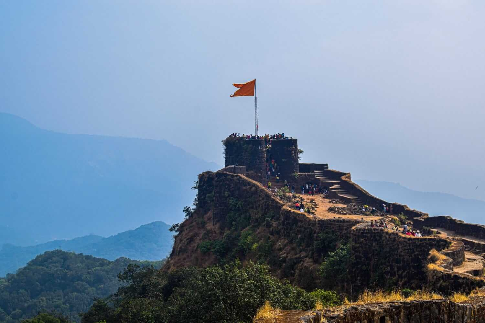
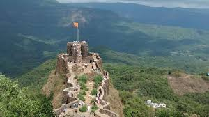
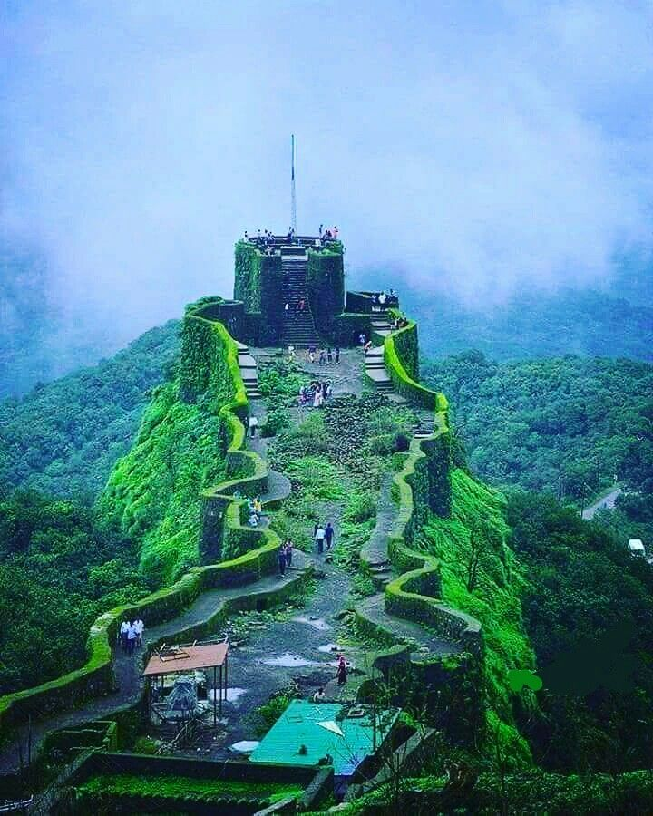

महाराष्ट्रातील एक प्रसिद्ध डोंगरी किल्ला. सातारा जिल्ह्यातील जावळी तालुक्यात महाबळेश्वरच्या नैर्ऋत्येस सु. १३ किमी. वर आहे. त्याची समुद्रसपाटीपासून उंची १,०९२ मी. असून पूर्वेकडील बाजूस ३४० मी. आणि पश्चिमेकडे ८७० मी. खोल दरी आहे. शिवाजी महाराजांनी जावळी खोरे जिंकल्यानंतर मोरो त्रिंबक पिंगळे यांस १६५६ मध्ये हा किल्ला बांधून घेण्यास आज्ञा दिली. मुख्य किल्ला, माची आणि बालेकिल्ला असे या किल्ल्याचे तीन भाग होतात. मुख्य किल्ला व बालेकिल्ला भागांत तलाव असून संरक्षणाच्या दृष्टीने किल्ल्याच्या चोहोबाजूंस भक्कम तटबंदी व बुरूज आहेत. बालेकिल्ल्याचे क्षेत्रफळ ३,६६० चौ. मी., तर मुख्य किल्ल्याचे ३,८८५ चौ. मी असून दक्षिणेकडील बुरूज १० ते १५ मी. उंचीचे आहेत. त्यांपैकी अफझल, रेडका, राजपहारा, केदार इ. बुरुजांचे अवशेष टिकून आहेत. अफझल बुरूज हा वैशिष्ट्यपूर्ण असून तो निमुळत्या डोंगर धारेच्या शेवटी आहे. या भागाला माची म्हणतात. कारण अशाच स्वरूपाचे बांधकाम राजगड (सुवेळा व संजीवनी), तोरणा ( झुंजार) या किल्ल्यांवरील माच्यांना आहे.मुख्य किल्ल्यात प्रवेश करण्यासाठी दोन दरवाजे पार करून जावे लागते. दोन्ही दरवाजांवर शरभाच्या प्रतिमा दिसतात. दोन दरवाजे पार केल्यावर शिवाजी महाराजांनी १६६१ मध्ये मोरो त्रिंबक पिंगळे यांच्या हस्ते स्थापिलेले तुळजा भवानीचे मंदिर आहे. या देवालयासमोर दोन उंच दीपमाळा आहेत. त्या जवळच नगारखान्याची इमारत आहे. तिचा १९३५ मध्ये जीर्णोद्धार करण्यात आला. भवानी देवीचे मूळ मंदिर हे फक्त दगडी गाभाऱ्याचे होते. १८२० साली सातारच्या प्रतापसिंह महाराजांनी (कार. १८१८-३९) तेथे लाकडी मंडप बांधला. हा मंडप आगीच्या भक्ष्यस्थानी पडला व मंदिरातील दागिन्यांची चोरी झाली. औरंगजेब दक्षिणेत आला असता या मंदिरासही काही उपद्रव झाला.
